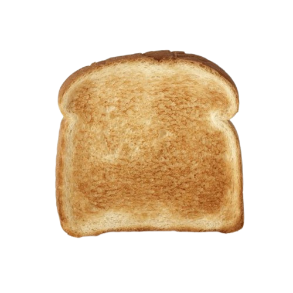
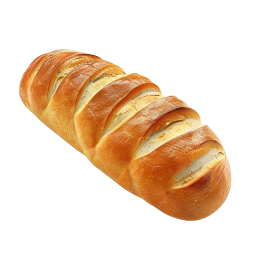

Photo of Slicella, Taken this year on national Bread-Day
Slicella
Slicella, a marvelous example of how to be bread, she spent years perfecting her craft, training her becoming-bread-skills to perfection. now one of the most famous breadformers to exist, destined to be remembered for the years to come Slicella, a marvelous example of how to be bread, she spent years perfecting her craft, training her becoming-bread-skills to perfection. Now one of the most famous breadformers to exist, destined to be remembered for the years to come
She now is the CEO of a company called "Bredndsturies" where they create many products to help you become the breadiest you can be; an example of one of Bredndsturies products is there famous skincare line yeastification
She now is the CEO of a company called "Bredndsturies" where they create many products to help you become the breadiest you can be; an example of one of Bredndsturies products is there famous skincare line yeastification
"Becoming a piece of bread was life changing!"

Photo of Toasty, Taken last year on national Bread-DayToasty
Toasty, a one of a kind example of a breadformer. He used various unique techniques-like bread-jutsu to become the loaf he is today. he is well renowned for his proficeny at becoming different forms of bread:
- Malt rye
- Brioche
- Flat bread
- Corn Bread
"Bread-vation is diffucult, but I must never cease to refine my rye if I am to be head of the next Bread-vation Sect."
placeholder 1
placeholder 2
placeholder 3
placeholder 4